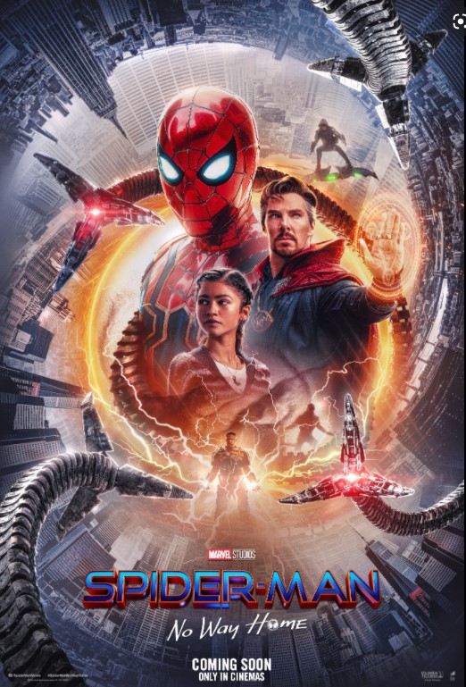
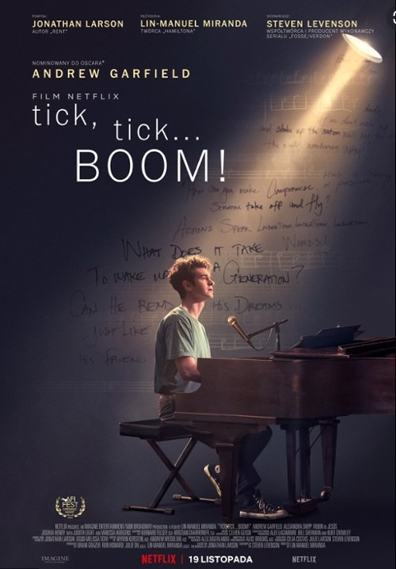
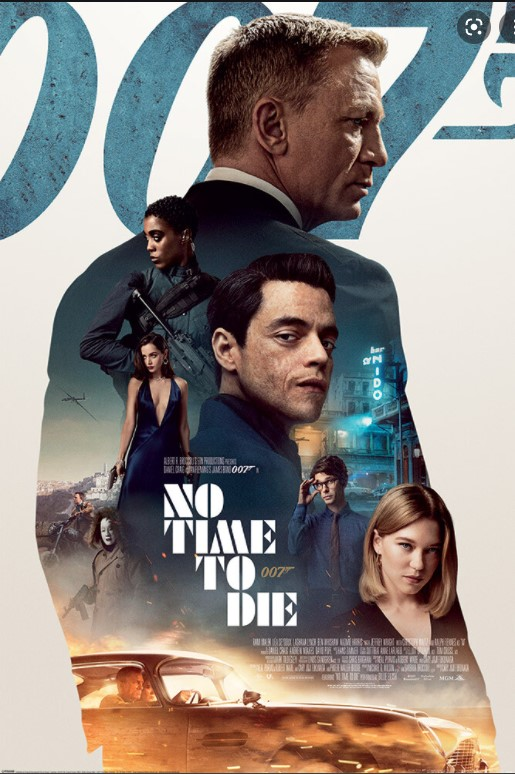
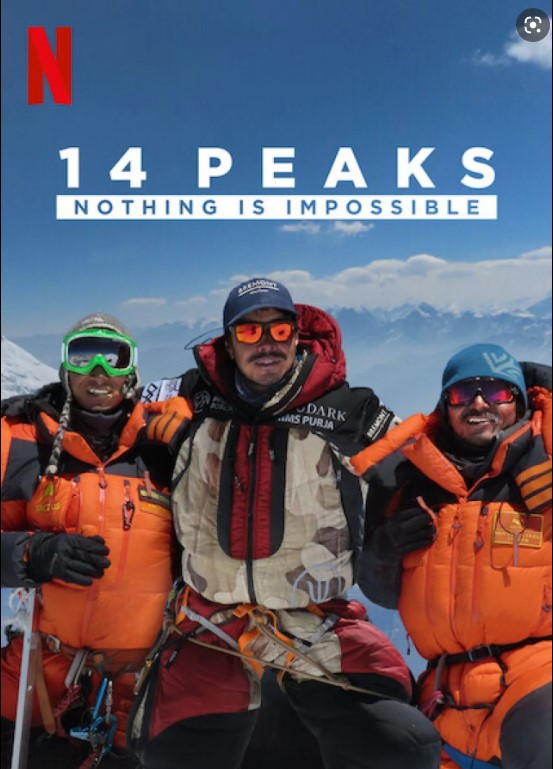

Witaj na tej stronie znajdziesz ranking najlepszych filmów 2021 roku!

| 1. Spiderman No way Home |
Spider-Man: Bez drogi do domu (oryg. Spider-Man: No Way Home) – amerykański fantastycznonaukowy film akcji na podstawie serii komiksów o superbohaterze o tym samym pseudonimie wydawnictwa Marvel Comics. Za reżyserię odpowiadał Jon Watts na podstawie scenariusza Chrisa McKenny i Erika Sommersa. Producentami filmu są Kevin Feige i Amy Pascal. W tytułowej roli powrócił Tom Holland, a obok niego w głównych rolach wystąpili: Zendaya, Benedict Cumberbatch, Jacob Batalon, Jon Favreau, Jamie Foxx, Willem Dafoe, Alfred Molina, Benedict Wong, Tony Revolori, Marisa Tomei, Tobey Maguire i Andrew Garfield. W filmie Peter Parker prosi Stephena Strange’a, aby ukryć jego tożsamość jako Spider-Mana. Rzucone zaklęcie wymyka się spod kontroli, dając możliwość przejścia złoczyńcom z alternatywnych światów. W starciu z nowymi przeciwnikami pomagają Parkerowi jego wersje z innych światów.
Sprawdź:
Filmweb o "Spiderman No way home"
Zobacz zwiastun!
| 2. Diuna |
Akcja toczy się w kosmosie w dalekiej przyszłości, w której, zamiast na udoskonalanie urządzeń, postawiono na rozwój umysłu (Uniwersum Diuny). Najważniejszą planetą we wszechświecie stała się Arrakis (Diuna), na której znajdują się złoża melanżu (przyprawy), umożliwiającego jasnowidzenie potrzebne do uniknięcia niebezpieczeństw podróży międzygwiezdnych. Powstawanie melanżu związane jest z cyklem rozwojowym czerwi pustyni – olbrzymich istot, żyjących w piaskach Arrakis. Diuna zostaje przekazana w lenno rodowi Atrydów. Na planetę przybywają książę Leto I Atryda, jego konkubina lady Jessika, syn Paul oraz ich armia. Wkrótce czeka ich jednak konfrontacja z rodem Harkonnenów
Sprawdź:
Filmweb o "Diunie"
Zobacz zwiastun!

| 3. TICK, TICK... BOOM! |
Tik, Tik... Bum! (także stylizowany na tik, tik... BOOM! ) to amerykański biograficzny dramat muzyczny z 2021 r., wyreżyserowany przez Lin-Manuela Mirandę w jego fabularnym debiucie reżyserskim. Napisany przez Stevena Levensona , opiera się na musicalu scenicznym o tym samym tytule autorstwa Jonathana Larsona , pół-autobiograficznej opowieści o tym, jak Larson pisze musical, który ma wejść do branży. W filmie występują Andrew Garfield , Robin de Jesús , Alexandra Shipp , Joshua Henry , Judith Light i Vanessa Hudgens . Tik, Tik... Bum! miał swoją światową premierę na AFI Fest 10 listopada 2021 r., a dwa dni później rozpoczął limitowaną premierę kinową , zanim 19 listopada trafił na Netflix . Film został dobrze przyjęty przez krytyków za występ Garfielda i reżyserię Mirandy, najlepszych filmów 2021 roku przez Amerykański Instytut Filmowy i był nominowany do 79. Złotego Globu w kategorii „ Najlepszy film kinowy” lub „Komedia ” , oraz do 27. edycji Critics' Choice Awards w kategorii „Najlepszy film” . Za swój występ Garfield otrzymał wiele nagród, w tymZłoty Glob dla najlepszego aktora w musicalu lub komedii . Dobiegający trzydziestki, obiecujący kompozytor teatralny próbuje pogodzić miłość i przyjaźń z presją stworzenia czegoś wielkiego, zanim skończy mu się czas.
Sprawdź:
Filmweb o "Tick, tick... boom!"
Zobacz zwiastun!

| 4. No time to die |
Nie czas umierać (ang. No Time to Die) – amerykańsko-brytyjski film szpiegowski, 25. część serii filmów o Jamesie Bondzie, wyprodukowana przez Eon Productions. Obraz jest piątym i ostatnim występem Daniela Craiga w roli agenta Jamesa Bonda. Film wyreżyserował Cary Joji Fukunaga, który jest również współautorem scenariusza. Poza odtwórcą roli głównej, swoje role z poprzednich filmów powtórzyli: Léa Seydoux, Ben Whishaw, Naomie Harris, Jeffrey Wright, Christoph Waltz, Rory Kinnear i Ralph Fiennes. Nowymi nazwiskami w obsadzie są natomiast: Rami Malek, Lashana Lynch, Ana de Armas, Dali Benssalah, Billy Magnussen i David Dencik.Kilka lat po odejściu Bonda ze służby, Felix Leiter z CIA zwraca się do niego z prośbą o pomoc. 007 musi powstrzymać Safina, dysponującego niebezpieczną nanotechnologią. Film pojawił się w kinach w Wielkiej Brytanii 30 września 2021, dwa dni po jego oficjalnej premierze w Royal Albert Hall. Premiera miała początkowo się odbyć w kwietniu 2020, lecz była wielokrotnie przekładana w wyniku pandemii COVID-19.
Sprawdź:
Filmweb o "No time to die"
Zobacz zwiastun!

| 5. 14 szczytów: nic nie jest niemożliwe |
14 Peaks: Nothing Is Impossible to film dokumentalny z 2021 roku wyreżyserowany przez Torquila Jonesa, wyprodukowany przez Noah Media Group, Little Monster Films i Torquil Jones z Nirmalem Purją , Jimmym Chinem i Elizabeth Vasarhelyi jako producentami wykonawczymi. Film śledzi nepalskiego alpinistę Nirmala Purję i jego zespół, którzy próbują wspiąć się na wszystkie 14 ośmiotysięczników w rekordowym czasie poniżej 7 miesięcy. (Poprzedni rekord miał ponad 7 lat.) Znaczną część materiału filmowego wykonał zespół ekspedycji, a dodatkowe zdjęcia i wywiady zostały dodane później przez reżysera, w tym wywiady z Reinholdem Messnerem (który nazwał ten wyczyn „wyjątkowym stwierdzeniem w historii alpinizmu”) i innymi ważnymi wspinacze wysokogórscy oraz rodzina Purja (w tym jego żona i bracia). Film miał swoją premierę na DOC NYC Film Festival i został wydany w serwisie Netflix 29 listopada 2021 roku.
Sprawdź:
Filmweb o "14 szczytów: nic nie jest niemożliwe"
Zobacz zwiastun!
|
|
|
|
|